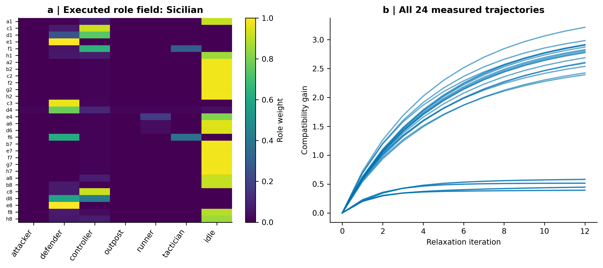
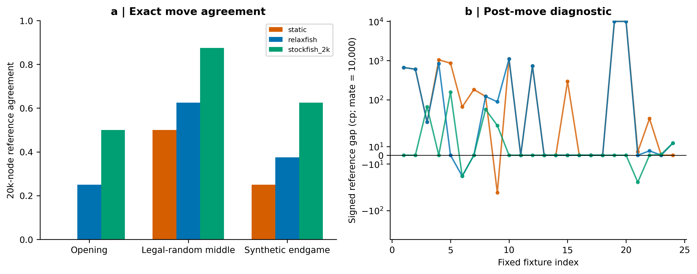
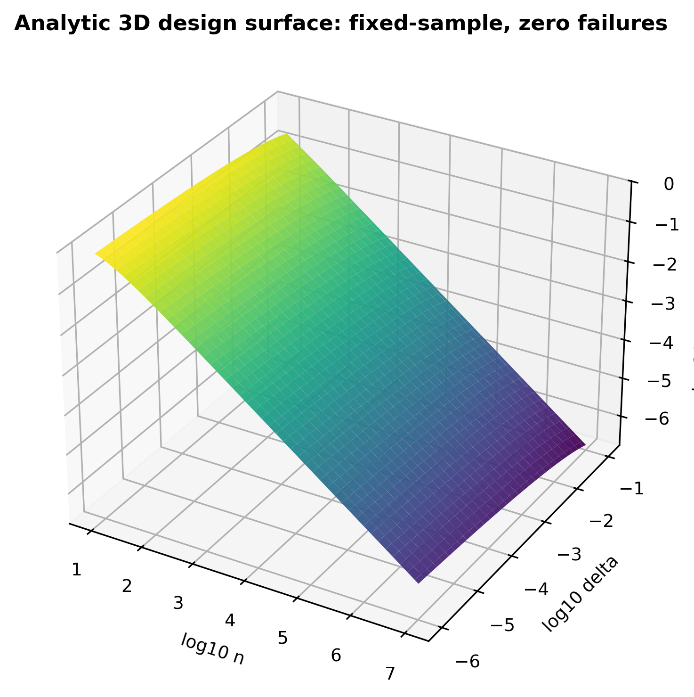
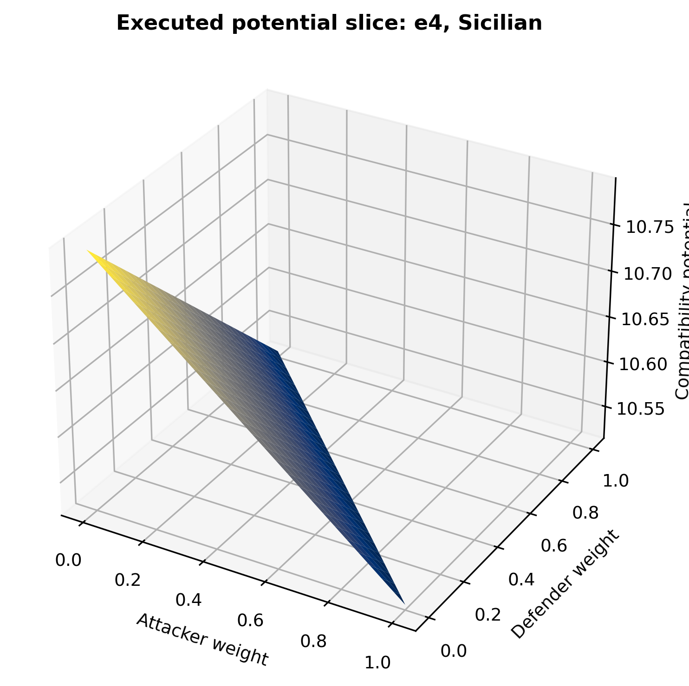

Better Than Stockfish:
Relaxfish
Hierarchical relaxation, adversarial evidence and empirical approximate solving.
The article develops an ambitious research programme with explicit definitions of strategic uncertainty, adversarial response and exact bounds. The title names the target. The one-ply pilot raised move agreement with a 20,000-node Stockfish 14.1 reference from 6/24 to 10/24; it lost all four diagnostic matches. Superiority over current Stockfish remains a prospective experiment.
Mathematics, measurements and a route to stronger claims
Seven-role inference combines individual affinities, pairwise coalitions and three-piece attack terms. The manuscript derives a simplex-preserving update and a local ascent direction, reports an executed diagnostic, and specifies controlled superiority and approximate-solving protocols. A separate bounded habitat solver demonstrates sound win/draw/loss intervals on small positions.
Includes two three-dimensional surfaces, analytic confidence calculations, measured role trajectories, paired ablations and the complete reproduction record.



